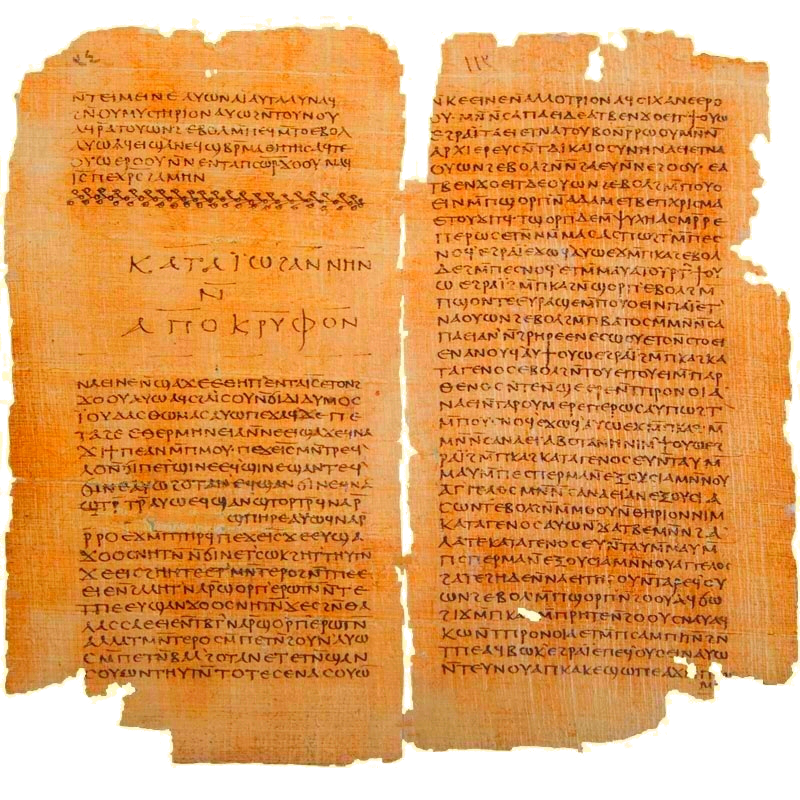

Hubo muchos más de cuatro. Evangelios de Tomás, de María, de Judas: relatos sobre Jesús que circularon, se leyeron y luego se quedaron fuera. Qué decían y por qué.
Hasta ahora esta serie recorrió el mundo judío. Cerramos en el cristiano, con una pregunta que sorprende a mucha gente: ¿por qué cuatro evangelios? No fue el número inevitable. En los primeros siglos circularon muchos textos que narraban dichos y hechos de Jesús. La criba del Nuevo Testamento eligió cuatro y dejó fuera el resto. Esos descartados —los evangelios apócrifos— son el último capítulo de los libros perdidos.

Curiosamente, dos años antes de los rollos del Mar Muerto, en 1945, unos campesinos egipcios que buscaban fertilizante cerca de Nag Hammadi desenterraron una vasija con trece códices de papiro encuadernados en cuero: 52 textos coptos, muchos de ellos gnósticos y desconocidos hasta entonces. Entre ellos, la joya: el Evangelio de Tomás. Como Qumrán, Nag Hammadi nos devolvió textos que la historia había enterrado —en este caso, probablemente escondidos cuando la Iglesia empezó a fijar su canon y a perseguir lo que quedaba fuera.
El más importante de los apócrifos. No es un relato: son 114 dichos (logia) atribuidos a Jesús, sin narración, sin milagros, sin pasión ni resurrección. Algunos coinciden con los evangelios canónicos; otros son enigmáticos y de sabor gnóstico: la salvación viene del conocimiento (gnosis) del propio origen divino.
Por qué no entró: su teología gnóstica —el yo secreto, el conocimiento salvador— chocaba con el cristianismo que se estaba volviendo mayoritario, centrado en la comunidad, los sacramentos y la muerte y resurrección de Cristo.
Presenta a María Magdalena como discípula predilecta, receptora de una enseñanza secreta de Jesús que ella transmite a los apóstoles —ante el recelo de Pedro—. Refleja corrientes donde una mujer podía tener autoridad espiritual de primer orden.
Por qué no entró: tanto por su teología como, muy probablemente, por el papel de liderazgo femenino que la corriente dominante fue restringiendo.
Redescubierto y publicado en 2006, da un giro radical: presenta a Judas no como traidor, sino como el único discípulo que comprendió a Jesús, que le pidió entregarlo para liberar su espíritu del cuerpo. Una inversión total del relato conocido.
Por qué no entró: abiertamente gnóstico y contrario a la narrativa central; nunca fue candidato serio, pero muestra la enorme diversidad de lo que se escribió.
Estos son solo tres de una lista larga: hubo evangelios “de la infancia” (que llenaban la niñez de Jesús con prodigios), evangelios de Pedro, de Felipe, de la Verdad… Un ecosistema riquísimo de textos, del que el canon seleccionó cuatro.
El cierre del canon cristiano fue, otra vez, un proceso gradual —no una decisión única—, pero con hitos más rastreables que en el hebreo. Durante el siglo II, los cuatro evangelios de Mateo, Marcos, Lucas y Juan fueron ganando aceptación general como los más antiguos y ligados a la tradición apostólica. Padres como Ireneo (hacia 180 d.C.) ya defendían que debían ser exactamente cuatro.
El momento simbólico llegó en el 367 d.C.: en una carta pascual, el obispo Atanasio de Alejandría enumeró por primera vez los 27 libros del Nuevo Testamento tal como los conocemos hoy, ni uno más ni uno menos. No “inventó” el canon —ratificó un consenso que ya se había ido formando—, pero su lista se volvió referencia. (Hay quien piensa que fue esa presión hacia un canon estricto la que llevó a esconder la biblioteca de Nag Hammadi.)
No hubo un día en que alguien decretara “solo estos cuatro evangelios”. Se fueron imponiendo por ser los más antiguos y ligados a los apóstoles, y hacia el año 367 un obispo puso por escrito la lista de 27 libros que ya se venía aceptando. Los demás evangelios quedaron fuera —y a veces, escondidos—.
Los evangelios que no entraron no prueban una “conspiración” que ocultó la verdad —una idea popular pero exagerada—. Lo que muestran es algo más real y más interesante: que el cristianismo primitivo fue extraordinariamente diverso. Hubo muchas maneras de entender a Jesús —gnósticas, ascéticas, apocalípticas—, y el canon fue el proceso por el cual una de ellas se consolidó como “ortodoxa” y las demás quedaron al margen.
Leer estos textos no revela un “Jesús secreto”, pero sí los caminos que el cristianismo no tomó: las corrientes derrotadas, las voces que perdieron. Es exactamente la misma lección que ha recorrido todo este blog —lo descartado también tiene historia—, aplicada ahora al nacimiento del Nuevo Testamento.
La serie de los libros perdidos empezó con una pregunta —¿quién decidió qué era la Biblia?— y termina con su respuesta desplegada: nadie, y muchos, a lo largo de siglos. No un concilio ni un decreto, sino un lento proceso de uso, copia, debate y consenso que distintas comunidades cerraron en puntos distintos, dejando fuera una biblioteca entera de textos.
Esos libros perdidos —Enoc en las cuevas, los rollos de Qumrán, los evangelios de Nag Hammadi— no son basura descartada. Son el negativo fotográfico de la Biblia: la imagen de todo lo que pudo haber sido Escritura y no lo fue. Y en ese negativo se lee, quizá mejor que en el positivo, cómo se fabricó realmente el libro más influyente de la historia.
Cuatro entregas, una verdad incómoda y luminosa: la Biblia es una selección, y toda selección deja fuera un mundo.
Lo perdido no siempre se perdió por falso. A veces solo llegó tarde, habló otra lengua, o soñó un Dios distinto.
El hallazgo de Nag Hammadi (1945), la naturaleza del Evangelio de Tomás (114 dichos, copto, probable original griego) y la carta 39 de Atanasio (367 d.C.) con los 27 libros son datos establecidos. Referencias: Bart Ehrman (Lost Christianities) y Elaine Pagels (Los evangelios gnósticos).
En debate: la datación del Evangelio de Tomás (del s. I al II) y si depende de los canónicos o es en parte independiente; una minoría de estudiosos lo data muy temprano. Se ha presentado la horquilla sin cerrarla. La etiqueta “gnóstico” para Tomás también se discute.
Este artículo describe la formación histórica del canon con respeto por la tradición cristiana; no afirma ninguna “conspiración” ni juzga la verdad teológica de los evangelios canónicos o apócrifos.